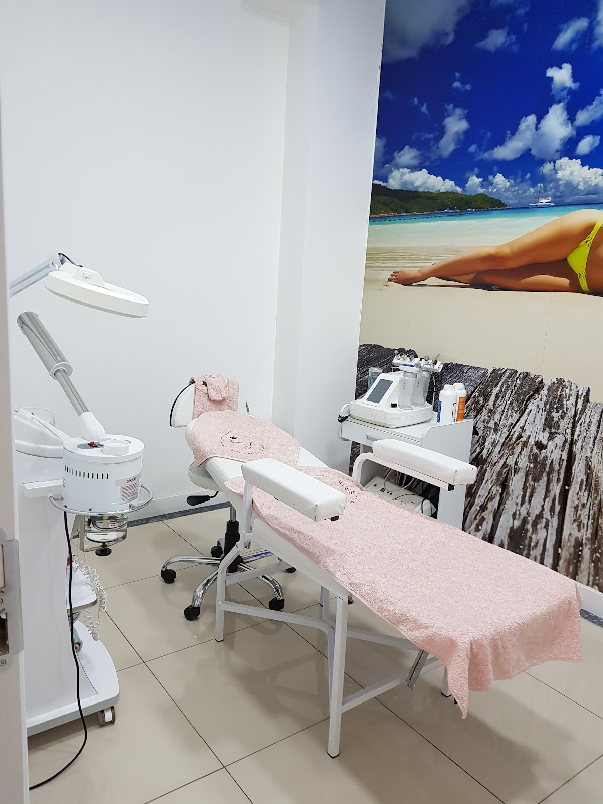

★★★★★Google
Cansu hanıma eşim, kendim ve arkadaşım lazere gidiyoruz. Erkek için bölümü ayrı. Tertemiz dürüst güvenilir bir salon. En son kaşlarımı da yaptırdım mükemmelllll.. Gönül rahatlığı ile tercih edebilirsiniz.
Ceylan Ü.Yorumun tamamı ↗
Beylikdüzü, Adnan Kahveci
Cilt bakımından tırnak uygulamalarına, kaş ve kirpikten günlük bakımınıza. Size uygun olanı birlikte belirleyelim.
Bakım seçenekleri
Cildiniz, beklentiniz ve ayırabildiğiniz zaman farklı olabilir. İşlemi seçmeden önce aklınızdaki soruları konuşalım.
Cilt bakımı ve yosun peeling seçenekleri hakkında bilgi alın. Hangi uygulamanın size uygun olduğunu görüşmede değerlendirelim.
İşlem seçimi öncesinde cildinizin ihtiyacını ve bakım rutininizi konuşalım.
Bu bakım hakkında yazınUygulama, uygunluk, süre ve ücret bilgisi için salonumuzla görüşebilirsiniz.

Salonumuz
Beylikdüzü, Adnan Kahveci’deyiz. Cilt, kaş ve kirpik, tırnak ve vücut bakımına yönelik uygulamalarımızı aynı salonda sunuyoruz.
İlk ziyaretinizden önce merak ettiklerinizi yazabilir, ilgilendiğiniz işlem ve uygun saatler hakkında bilgi alabilirsiniz.
Salonumuza ulaşınYakından
Google yorumları
Cansu hanıma eşim, kendim ve arkadaşım lazere gidiyoruz. Erkek için bölümü ayrı. Tertemiz dürüst güvenilir bir salon. En son kaşlarımı da yaptırdım mükemmelllll.. Gönül rahatlığı ile tercih edebilirsiniz.
Tavsiye üzerine geldiğim ve cilt bakımından memnun kaldığım ,konforlu ,temiz ,çay kahve ikramları ve hoş sohbetle zamanın nasıl geçtiğini anlamayacaginiz keyifli bir yer . Aldığım hizmetten memnun kaldım güzel bir hafiflik ve rahatlama ile ayrılıyorum,tavsiye ederim. Ayrıca size zorla olmadık şeylerin reklamını yapıp herhangi gereksiz bir takım şeyleri almak zorunda kalmadan memnun kalarak bu deneyimi yasayabilirsiniz .🌸benim için güvenlik ve temizlik önemli o sebeple bu kısımlar çok dikkatimi çekti ve sonuçtan memnun kaldigim için paylaşmak istedim .
Epilasyon işleminden gerçekten memnun kaldım. Beklediğimden daha hızlı sonuç aldım, çok memnunum. İşlem çok özenliydi, ortam temizdi ve Elif Hanım da çok ilgiliydi. Kendimi çok rahat hissettim, gönül rahatlığıyla tavsiye ederim ✨
Epilasyon süreci benim için her zaman biraz tereddütlü başladığım bir konuydu ama iyi ki burayı tercih etmişim diyorum 🙏 İlk günden itibaren hem profesyonellikleri hem de güler yüzleriyle gerçekten içimi rahatlattılar. Ortam son derece temiz, hijyen konusunda çok titizler ve bu benim için en önemli kriterlerden biriydi. İşlemler sırasında kullanılan cihazlar oldukça kaliteli ve her aşamada detaylı bilgilendirme yapılıyor. Ne yapıldığını bilmek insana ekstra güven veriyor. Ayrıca seanslarımda gözle görülür sonuçlar almaya başladım, bu da doğru yerde olduğumu kanıtladı diyebilirim ✨ Ama en güzel kısmı kesinlikle işletme sahibi Cansu Hanım ❤️ Kendisi o kadar tatlı, ilgili ve samimi ki sizi müşteri gibi değil adeta bir arkadaş gibi hissettiriyor. Her gittiğimde enerjisiyle günümü güzelleştiriyor. İşini gerçekten severek yaptığı o kadar belli ki, bu da hizmete direkt yansıyor. Gönül rahatlığıyla herkese tavsiye edebileceğim bir yer. Hem kaliteli hizmet almak hem de kendinizi iyi hissetmek istiyorsanız kesinlikle doğru adres. İyi ki yollarımız kesişmiş 🤍🫠
Güler yüzü ile beni karşılayan ekibe tertemiz bir ortamda gönül rahatlığı ile kendimi bırakıp huzurlu hissediyorum. Cilt bakımı için geldiğim bu yerde hijyene önem veriliyor bu çok guzel aldığım hizmetten çok memnun kaldım. Otopark sorunu olmuyor genelde park yeri her zaman oluyor.
Bize ulaşın
İlgilendiğiniz işlemi yazın; uygunluk ve saat bilgisini birlikte netleştirelim.
0533 247 64 62Kopyalayıp Instagram sohbetimize yapıştırabilirsiniz.